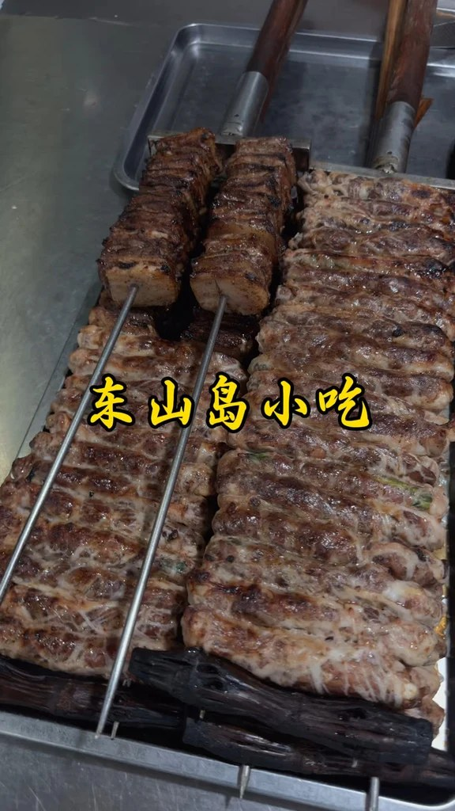
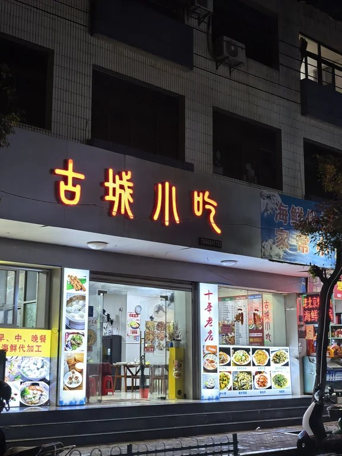
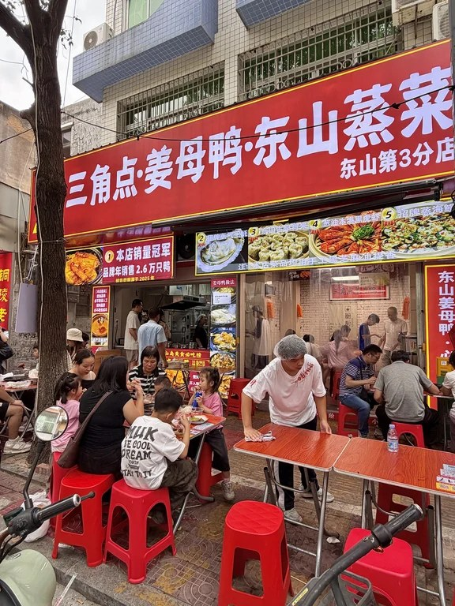
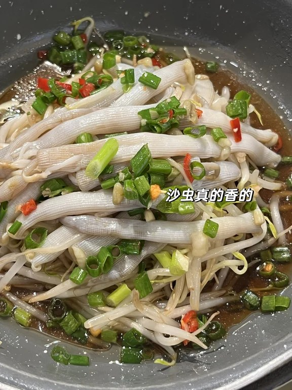
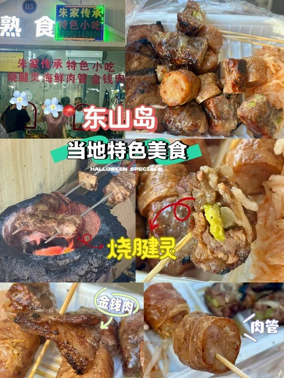
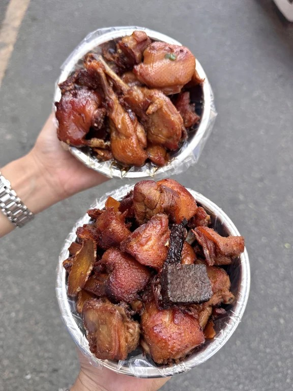

行程总览
- 去程：南山海岸城 → 风动石 466.7 km / 约 5h20（国庆按 13:00～14:00 抵岛预期）
- 返程：风动石 → 海岸城 约 5h41；马銮湾上高速略短 约 5h31 —— 10/5 中午前上路
- 岛内：风动石↔马銮 20′ · 马銮↔金銮 12′ · 金銮↔苏峰 23′ · 风动石↔南门湾 22′
- 住宿：连续两晚 南门湾/铜陵（桔子 / 海豚湾 优先，确认两车车位）
- 不做：土楼与东山同日；D3 新开澳角等大点
| 日 | 主题 | 正餐口径 |
|---|---|---|
| D1 | 深→铜陵 · 南门湾日落 · 夜市民俗 | 猫仔粥/蚵仔煎 + 烧腱肖米海蛎煎 |
| D2 | 苏峰环岛 · 南屿查潮 · 市场加工/姜母鸭 | 帝业自购加工 或 鑫坞堂；游客海鲜桌降权 |
| D3 | 可选补 1h 金銮 · 中午前返深 | 简单打包 |
Day1｜10/3 深 → 东山铜陵
开车
07:00 南山海岸城集合；导航终点风动石或已订酒店。主线滨海大道→春风隧道→G0422→G15→G1523→S85→G15→S64 东山支线（两车过路费翻倍）。理想约 12:20 抵铜陵，国庆预留拖到 13:30～14:00。
吃
午餐（当地小吃）：阿强猫仔粥（万祥路 325 号，高德核实）/ 旧戏院 / 本地猫仔粥；路顶猫仔粥待核。或忠义蚵仔煎。

晚餐主场：铜陵夜市 —— 烧腱、肖米、海蛎煎/蚵仔煎（摊名现场看）；小媳妇甜汤、阿勇果汁。海鲜大桌留到 D2。


玩
14:00～15:30 入住午睡 → 15:30～17:00 可选风动石外围/顶街（门票约 45 量级，到店核对）或南门湾堤岸散步 → 17:00～18:30 南门湾日落（礁石湿滑；《左耳》天台或需消费）。
住
南门湾连锁连续两晚：优先 桔子酒店(南门湾店) 码头街 1 号 · 备选海豚湾西铜路 318 号。订 3 间、要 2 车位、尽量同层。南门湾停车场泥土地、节假日出口易堵，优先停酒店。
Day2｜10/4 岛内精华
开车
可选 05:30～07:30 金銮湾日出（马銮→金銮约 12′）。白天：金銮→苏峰约 23′，环岛路有单行段，蓝栏杆第二段更好拍，勿违停。南屿/岩雅/马銮按体力砍。
吃
早餐：人民市场一带小吃，或猫仔粥/蚵仔煎/烧腱。

正餐首选路径 A：导航 帝业农贸市场（铜亭街 5 号） 自购海鲜 → 附近小店加工。加工费线索约 10～20 元/道（白灼/清蒸约 15，爆炒常 ≥20）。傍晚帝业仍可能有海鲜卖。

路径 B：鑫坞堂姜母鸭（万祥路 452 / 水产路 55 / 苏峰一路 1104）。评论备选 赖三金姜母鸭 —— 高德本轮未精确命中同名，待核。

已降权（不作首选）：星奇缘、金銮渔家、阿珠海鲜馆 → 仅作游客海鲜桌备选。
玩
09:00～12:00 苏峰环岛慢行拍照 → 午餐后 南屿双面海（必须查潮）；不行改马銮湾挖沙。岩雅恋人：车停冬古村外，礁石极滑，带娃慎行。傍晚回铜陵果汁/甜汤解腻。
住
同店。若午未吃姜母鸭，晚补鑫坞堂或夜市烧腱肖米。早睡备 D3 退房。
Day3｜10/5 早活动 → 返深
开车
07:30～08:00 退房上车。11:00～11:30 前进入 S64/G15。风动石方向返程约 5h41；马銮附近上高速约 5h31。目标傍晚抵南山（国庆可能 18:30～19:30）。
吃
可选金銮湾补 1h 后，铜陵打包肖米/果汁/猫仔粥，或服务区再吃。返程极早且全员同意才短停古城卤面线（阿芳卤面等），家庭优先直回。
玩
仅可选：08:00～09:30 金銮湾拍照踩沙即走。不再开新景点（不做澳角全线、不做新环岛大圈）。
住
无。行李全上车；结清停车费；两车核对导航与服务区汇合点。
当地人美食（审计后）
TikHub 补数：搜索 183 · 详情 39 · 评论 10 · 花费 $0.60；Cookie 直连曾 461。意图：当地人/民俗/老店/菜市场，降权网红游客桌。
主推三句
- 夜市线：铜陵烧腱、肖米、海蛎煎/蚵仔煎 + 忠义蚵仔煎 —— D1 民俗主场。
- 老店与市场：阿强/旧戏院/本地猫仔粥；人民市场小吃；帝业农贸自购 + 加工（约 10–20/道） —— 本地人避坑吃海鲜。
- 正餐地标：鑫坞堂姜母鸭；评论里的赖三金姜母鸭作备选并 待核。星奇缘/金銮渔家/阿珠 → 游客海鲜桌备选。



| 裁决 | 对象 |
|---|---|
| KEEP | 忠义蚵仔煎、猫仔粥诸老店、鑫坞堂、小媳妇甜汤、阿勇果汁、烧腱/肖米/海蛎煎 |
| ADD | 帝业农贸加工路径、人民市场、铜陵夜市、路顶猫仔粥（待核） |
| DEMOTE | 星奇缘、金銮渔家、阿珠海鲜馆 |
| 待核 | 赖三金姜母鸭、路顶猫仔粥、谢记小媳妇四果汤 |
踩坑与必带
踩坑
- 车程别信「3.5～5h」——以高德约 5h20 去 / 5.5h+ 回 排表。
- 南屿/鱼骨/澳角洞穴必须查潮。
- 海鲜：优先帝业自购+问清加工费；多问两摊；游客排档降权。
- 南门湾/金銮停车场节假日出口易堵半小时。
- 苏峰单行+违停风险；岩雅勿开车进村。
- 卤面阿芳/阿芬并存；猫仔粥多店看排队即可。
必带
证件 ETC · 防晒防滑鞋 · 驱蚊 · 潮汐 App · 小额现金（市场找零）· 儿童应急药与零食 · 两车对讲/群定位。
费用粗算
| 项目 | 粗算（三家合计） |
|---|---|
| 酒店 500×3×2 | ≈ 3,000 |
| 油费往返～940km×两车 | ≈ 1,100～1,300 |
| 过路费两车 | ≈ 800～1,200 |
| 门票 | ≈ 0～800 |
| 餐食（市场路径可压低） | ≈ 4,000～7,500 |
| 停车/其它 | ≈ 300～600 |
| 合计 | 约 0.95～1.45 万 |
未含水上项目/跟拍；国庆房价上浮另加。审计 API $0.60 已发生，不计入旅行预算。
源：REPORT_v2.md + tikhub_audit.md + amap_routes.md｜2026-09-19 Asia/Shanghai